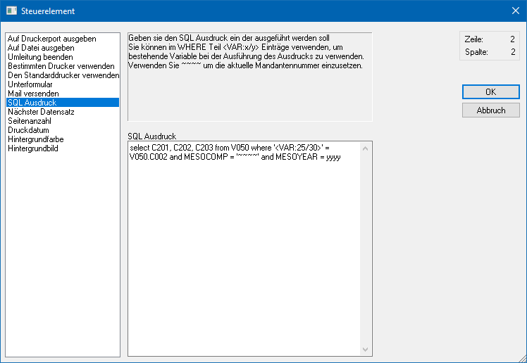
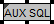

Mit Hilfe des Steuerelements "SQL Ausdruck" können im Formular SQL-Abfragen hinterlegt werden, deren Ergebnisse dann am Formular angedruckt werden können. SQL-Statements werden in der Regel dann verwendet, wenn im Formular die gewünschten Daten nicht direkt zur Verfügung stehen.
Hinweis
Das Ergebnis wird automatisch in der View 500 ab Variable 100 zur Verfügung gestellt, wobei es insgesamt 254 unterschiedliche SQL-Variablen gibt (in der View 500 bis Variable 354).
Achtung
Das Steuerelement "SQL Ausdruck" ist nur ein Teil einer Datenbankabfrage, wobei die Ausgabe in einer fest vorgeschriebenen Reihenfolge erfolgen muss:
ü Datenbankabfrage (über Steuerelement "SQL Ausdruck" -> wird im Formulareditor "SQL AUX" ausgewiesen)
ü Datenbankabfrage ausführen lassen (über Steuerelement "Nächster Datensatz" -> wird im Formulareditor mit "AUX SQLNEXT" ausgewiesen)
ü Einbau der Variablen für den Ausdruck (View 500, Variable 100 bis 354)
Die Reihenfolge kann überprüft werden, indem zuerst das Element "AUX SQL" angeklickt wird - wird danach die TAB-Taste gedrückt, muss das Element "AUX SQLNEXT" aktiviert werden, erst danach dürfen die Variablen (500/100, 500/101, etc.) folgen.
Ist das nicht der Fall, kann die Datenbankabfrage beim Ausdruck nicht richtig abgearbeitet werden. Damit die Reihenfolge stimmt, können die Elemente mit den Optionen (über rechte Maustaste) "in den Vordergrund" oder "in den Hintergrund" in der Reihenfolge verändert werden.

Innerhalb eines SQL-Statements kann mit den folgenden Platzhaltern gearbeitet werden:
ü ~~~~
Dieser Platzhalter wird
durch das aktuelle Mandantenkürzel (z.B. 300M) ersetzt.
ü yyyy
Dieser Platzhalter wird
durch das aktuelle Wirtschaftsjahr (z.B. 1380 => entspricht dem Jahr 2015)
ersetzt.
Darstellung im Formular
Im Formular werden Steuerelemente des Typs "SQL Ausdruck" wie folgt dargestellt:
ü

Zusätzlich wird in der Buttonleiste "Elementeigenschaften" der Inhalt (gemäß des hinterlegten SQL-Statements) wie folgt dargestellt:
ü
Beispiel 1
Am Kontoblatt soll jeweils die Kontobezeichnung der Soll- und Haben-Konten angedruckt werden.
ü Statement
SELECT C003 from T055
WHERE C002 = '<VAR:0/66>' and MESOCOMP = '~~~~' and MESOYEAR = yyyy
ü Beschreibung
Es wird die
Kontenbezeichnung (C003) der Tabelle T055 geladen, wo die Kontonummer (C002) mit
der Kontonummer des Gegenkontos (0/66) übereinstimmt.
ü Ergebnis
Es wird die Variable
500/100 gefüllt, die an jeder beliebiger Position NACH dem SQL-Statement
gedruckt werden kann.
Beispiel 2
Am Lieferschein sollen die ersten 3 Zusatzfelder der Lieferadresse angedruckt werden.
ü Statement
SELECT C201, C202,
C203 FROM V050 WHERE '<VAR:25/30>' = V050.C002 and MESOCOMP = '~~~~' and
MESOYEAR = yyyy
ü Beschreibung
Es werden die
Zusatzfelder 1, 2 und 3 des Kontenstammes geladen, wo die Kontonummer der
Lieferadresse mit der Kontonummer des Kontenstamms übereinstimmt.
ü Ergebnis
Es werden die
Variablen 500/100, 500/101 und 500/102 in der Reihenfolge des SQL-Statements
gefüllt (500/100 = Zusatzfeld1, 500/101 = Zusatzfeld2, 500/102 = Zusatzfeld3)
und können beliebig angedruckt werden.
Beispiel 3
Es sollen die Adressinformationen der im Kundenstamm hinterlegten Rechnungsadresse angedruckt werden.
ü Statement
SELECT C049, C003,
C084, C053, C050, C082, C097, C051, C052 FROM V050 WHERE '<VAR:50/130>' =
V050.C002 and MESOCOMP = '~~~~' and MESOYEAR = yyyy
ü Beschreibung
Es werden die
Felder Anrede, Name, Name2, zu Handen, Straße, Straße2, Staat, PLZ und Ort
geladen, wo die Rechnungsadresse der Kontonummer entspricht.
ü Ergebnis
Es werden die
Variablen 500/100 bis 500/108 in der oben genannten Reihenfolge befüllt und
können beliebig angedruckt werden.
Hinweis zu den Beispiel-Statements
Die Zeichen ~~~~, mit der die Spalte MESOCOMP abgefragt wird, stehen für die Mandantennummer, die yyyy, mit der die Spalte MESOYEAR abgefragt wird, steht für das aktuelle Wirtschaftsjahr. Damit die Statements mandantenübergreifend wirken, werden die ~~~~ und yyyy verwendet, die dann bei der Ausführung durch die Mandantennummer bzw. das Wirtschaftsjahr ersetzt werden.
Wenn im WHERE-Statement eine Variable angesprochen wird, dann muss darauf geachtet werden, welcher Datentyp die Variable ist. Wenn die Variable ein String (Text) ist, dann muss die Variable mit einfachem Hochkomma (') versehen werden. Wenn die Variable eine Zahl ist, dann darf das einfache Hochkomma nicht verwendet werden.
Beispiel - Text
ü Statement
SELECT C003 from T055
WHERE C002 = '<VAR:0/66>' and MESOCOMP = '~~~~' and MESOYEAR = yyyy
ü Beschreibung
In diesem Fall ist
die Variable "VAR:0/66" die Kontenbezeichnung und muss daher unter Hochkomma
gestellt werden.
Beispiel - Zahl
ü Statement
SELECT C001 from T035
WHERE C008 = <VAR:26/46> and MESOCOMP = '~~~~' and MESOYEAR = yyyy
ü Beschreibung
In diesem Fall ist
die Variable "VAR:26/46" die Vertreternummer (Zahl) und somit darf das Hochkomma
nicht gesetzt werden.